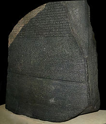
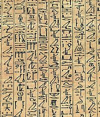

Number Systems
Human beings use decimal (base 10) and duodecimal (base 12) number systems for counting and measurements (probably because we have 10 fingers and two big toes). Computers use binary (base 2) number system, as they are made from binary digital components (known as transistors) operating in two states - on and off. In computing, we also use hexadecimal (base 16) or octal (base 8) number systems, as a compact form for represent binary numbers.
Decimal (Base 10) Number System
Decimal number system has ten symbols: 0, 1, 2, 3, 4, 5, 6, 7, 8, and 9, called digits. It uses positional notation. That is, the least-significant digit (right-most digit) is of the order of 10^0 (units or ones), the second right-most digit is of the order of 10^1 (tens), the third right-most digit is of the order of 10^2 (hundreds), and so on. For example,
735 = 7×10^2 + 3×10^1 + 5×10^0
We shall denote a decimal number with an optional suffix D if ambiguity arises.
Binary (Base 2) Number System
Binary number system has two symbols: 0 and 1, called bits. It is also a positional notation, for example,
10110B = 1×2^4 + 0×2^3 + 1×2^2 + 1×2^1 + 0×2^0
We shall denote a binary number with a suffix B. Some programming languages denote binary numbers with prefix 0b (e.g., 0b1001000), or prefix b with the bits quoted (e.g., b'10001111').
A binary digit is called a bit. Eight bits is called a byte (why 8-bit unit? Probably because 8=23).
Hexadecimal (Base 16) Number System
Hexadecimal number system uses 16 symbols: 0, 1, 2, 3, 4, 5, 6, 7, 8, 9, A, B, C, D, E, and F, called hex digits. It is a positional notation, for example,
A3EH = 10×16^2 + 3×16^1 + 14×16^0
We shall denote a hexadecimal number (in short, hex) with a suffix H. Some programming languages denote hex numbers with prefix 0x (e.g., 0x1A3C5F), or prefix x with hex digit quoted (e.g., x'C3A4D98B').
Each hexadecimal digit is also called a hex digit. Most programming languages accept lowercase 'a' to 'f' as well as uppercase 'A' to 'F'.
Computers uses binary system in their internal operations, as they are built from binary digital electronic components. However, writing or reading a long sequence of binary bits is cumbersome and error-prone. Hexadecimal system is used as a compact form or shorthand for binary bits. Each hex digit is equivalent to 4 binary bits, i.e., shorthand for 4 bits, as follows:
| 0H (0000B) (0D) | 1H (0001B) (1D) | 2H (0010B) (2D) | 3H (0011B) (3D) |
| 4H (0100B) (4D) | 5H (0101B) (5D) | 6H (0110B) (6D) | 7H (0111B) (7D) |
| 8H (1000B) (8D) | 9H (1001B) (9D) | AH (1010B) (10D) | BH (1011B) (11D) |
| CH (1100B) (12D) | DH (1101B) (13D) | EH (1110B) (14D) | FH (1111B) (15D) |
Conversion from Hexadecimal to Binary
Replace each hex digit by the 4 equivalent bits, for examples,
A3C5H = 1010 0011 1100 0101B 102AH = 0001 0000 0010 1010B
Conversion from Binary to Hexadecimal
Starting from the right-most bit (least-significant bit), replace each group of 4 bits by the equivalent hex digit (pad the left-most bits with zero if necessary), for examples,
1001001010B = 0010 0100 1010B = 24AH 10001011001011B = 0010 0010 1100 1011B = 22CBH
It is important to note that hexadecimal number provides a compact form or shorthand for representing binary bits.
Conversion from Base r to Decimal (Base 10)
Given a n-digit base r number: dn-1 dn-2 dn-3 ... d3 d2 d1 d0 (base r), the decimal equivalent is given by:
dn-1 × r^(n-1) + dn-2 × r^(n-2) + ... + d1 × r^1 + d0 × r^0
For examples,
A1C2H = 10×16^3 + 1×16^2 + 12×16^1 + 2 = 41410 (base 10) 10110B = 1×2^4 + 1×2^2 + 1×2^1 = 22 (base 10)
Conversion from Decimal (Base 10) to Base r
Use repeated division/remainder. For example,
To convert 261D to hexadecimal: 261/16 => quotient=16 remainder=5 16/16 => quotient=1 remainder=0 1/16 => quotient=0 remainder=1 (quotient=0 stop) Hence, 261D = 105H
The above procedure is actually applicable to conversion between any 2 base systems. For example,
To convert 1023(base 4) to base 3: 1023(base 4)/3 => quotient=25D remainder=0 25D/3 => quotient=8D remainder=1 8D/3 => quotient=2D remainder=2 2D/3 => quotient=0 remainder=2 (quotient=0 stop) Hence, 1023(base 4) = 2210(base 3)
General Conversion between 2 Base Systems with Fractional Part
- Separate the integral and the fractional parts.
- For the integral part, divide by the target radix repeatably, and collect the ramainder in reverse order.
- For the fractional part, multiply the fractional part by the target radix repeatably, and collect the integral part in the same order.
Example 1:
Convert 18.6875D to binary Integral Part = 18D 18/2 => quotient=9 remainder=0 9/2 => quotient=4 remainder=1 4/2 => quotient=2 remainder=0 2/2 => quotient=1 remainder=0 1/2 => quotient=0 remainder=1 (quotient=0 stop) Hence, 18D = 10010B Fractional Part = .6875D .6875*2=1.375 => whole number is 1 .375*2=0.75 => whole number is 0 .75*2=1.5 => whole number is 1 .5*2=1.0 => whole number is 1 Hence .6875D = .1011B Therefore, 18.6875D = 10010.1011B
Example 2:
Convert 18.6875D to hexadecimal Integral Part = 18D 18/16 => quotient=1 remainder=2 1/16 => quotient=0 remainder=1 (quotient=0 stop) Hence, 18D = 12H Fractional Part = .6875D .6875*16=11.0 => whole number is 11D (BH) Hence .6875D = .BH Therefore, 18.6875D = 12.BH
Exercises (Number Systems Conversion)
- Convert the following decimal numbers into binary and hexadecimal numbers:
10848489000
- Convert the following binary numbers into hexadecimal and decimal numbers:
100001100010000000101010101010
- Convert the following hexadecimal numbers into binary and decimal numbers:
ABCDE123480F
- Convert the following decimal numbers into binary equivalent:
19.25D123.456D
Answers: You could use the Windows' Calculator (calc.exe) to carry out number system conversion, by setting it to the scientific mode. (Run "calc" ⇒ Select "View" menu ⇒ Choose "Programmer" or "Scientific" mode.)
1101100B,1001011110000B,10001100101000B,6CH,12F0H,2328H.218H,80H,AAAH,536D,128D,2730D.10101011110011011110B,1001000110100B,100000001111B,703710D,4660D,2063D.- ??
Computer Memory & Data Representation
Computer uses a fixed number of bits to represent a piece of data, which could be a number, a character, or others. A n-bit storage location can represent up to 2^n distinct entities. For example, a 3-bit memory location can hold one of these eight binary patterns: 000, 001, 010, 011, 100, 101, 110, or 111. Hence, it can represent at most 8 distinct entities. You could use them to represent numbers 0 to 7, numbers 8881 to 8888, characters 'A' to 'H', or up to 8 kinds of fruits like apple, orange, banana; or up to 8 kinds of animals like lion, tiger, etc.
Integers, for example, can be represented in 8-bit, 16-bit, 32-bit or 64-bit. You, as the programmer, choose an appropriate bit-length for your integers. Your choice will impose constraint on the range of integers that can be represented. Besides the bit-length, an integer can be represented in various representation schemes, e.g., unsigned vs. signed integers. An 8-bit unsigned integer has a range of 0 to 255, while an 8-bit signed integer has a range of -128 to 127 - both representing 256 distinct numbers.
It is important to note that a computer memory location merely stores a binary pattern. It is entirely up to you, as the programmer, to decide on how these patterns are to be interpreted. For example, the 8-bit binary pattern "0100 0001B" can be interpreted as an unsigned integer 65, or an ASCII character 'A', or some secret information known only to you. In other words, you have to first decide how to represent a piece of data in a binary pattern before the binary patterns make sense. The interpretation of binary pattern is called data representation or encoding. Furthermore, it is important that the data representation schemes are agreed-upon by all the parties, i.e., industrial standards need to be formulated and straightly followed.
Once you decided on the data representation scheme, certain constraints, in particular, the precision and range will be imposed. Hence, it is important to understand data representation to write correct and high-performance programs.
Rosette Stone and the Decipherment of Egyptian Hieroglyphs
 Egyptian hieroglyphs (next-to-left) were used by the ancient Egyptians since 4000BC. Unfortunately, since 500AD, no one could longer read the ancient Egyptian hieroglyphs, until the re-discovery of the Rosette Stone in 1799 by Napoleon's troop (during Napoleon's Egyptian invasion) near the town of Rashid (Rosetta) in the Nile Delta.
The Rosetta Stone (left) is inscribed with a decree in 196BC on behalf of King Ptolemy V. The decree appears in three scripts: the upper text is Ancient Egyptian hieroglyphs, the middle portion Demotic script, and the lowest Ancient Greek. Because it presents essentially the same text in all three scripts, and Ancient Greek could still be understood, it provided the key to the decipherment of the Egyptian hieroglyphs.
The moral of the story is unless you know the encoding scheme, there is no way that you can decode the data.
Reference and images: Wikipedia.
Integer Representation
Integers are whole numbers or fixed-point numbers with the radix point fixed after the least-significant bit. They are contrast to real numbers or floating-point numbers, where the position of the radix point varies. It is important to take note that integers and floating-point numbers are treated differently in computers. They have different representation and are processed differently (e.g., floating-point numbers are processed in a so-called floating-point processor). Floating-point numbers will be discussed later.
Computers use a fixed number of bits to represent an integer. The commonly-used bit-lengths for integers are 8-bit, 16-bit, 32-bit or 64-bit. Besides bit-lengths, there are two representation schemes for integers:
- Unsigned Integers: can represent zero and positive integers.
- Signed Integers: can represent zero, positive and negative integers. Three representation schemes had been proposed for signed integers:
- Sign-Magnitude representation
- 1's Complement representation
- 2's Complement representation
You, as the programmer, need to decide on the bit-length and representation scheme for your integers, depending on your application's requirements. Suppose that you need a counter for counting a small quantity from 0 up to 200, you might choose the 8-bit unsigned integer scheme as there is no negative numbers involved.
n-bit Unsigned Integers
Unsigned integers can represent zero and positive integers, but not negative integers. The value of an unsigned integer is interpreted as "the magnitude of its underlying binary pattern".
Example 1: Suppose that n=8 and the binary pattern is 0100 0001B, the value of this unsigned integer is 1×2^0 + 1×2^6 = 65D.
Example 2: Suppose that n=16 and the binary pattern is 0001 0000 0000 1000B, the value of this unsigned integer is 1×2^3 + 1×2^12 = 4104D.
Example 3: Suppose that n=16 and the binary pattern is 0000 0000 0000 0000B, the value of this unsigned integer is 0.
An n-bit pattern can represent 2^n distinct integers. An n-bit unsigned integer can represent integers from 0 to (2^n)-1, as tabulated below:
| n | Minimum | Maximum |
|---|---|---|
| 8 | 0 | (2^8)-1 (=255) |
| 16 | 0 | (2^16)-1 (=65,535) |
| 32 | 0 | (2^32)-1 (=4,294,967,295) (9+ digits) |
| 64 | 0 | (2^64)-1 (=18,446,744,073,709,551,615) (19+ digits) |
Signed Integers
Signed integers can represent zero, positive integers, as well as negative integers. Three representation schemes are available for signed integers:
- Sign-Magnitude representation
- 1's Complement representation
- 2's Complement representation
In all the above three schemes, the most-significant bit (msb) is called the sign bit. The sign bit is used to represent the sign of the integer - with 0 for positive integers and 1 for negative integers. The magnitude of the integer, however, is interpreted differently in different schemes.
n-bit Sign Integers in Sign-Magnitude Representation
In sign-magnitude representation:
- The most-significant bit (msb) is the sign bit, with value of 0 representing positive integer and 1 representing negative integer.
- The remaining n-1 bits represents the magnitude (absolute value) of the integer. The absolute value of the integer is interpreted as "the magnitude of the (n-1)-bit binary pattern".
Example 1: Suppose that n=8 and the binary representation is 0 100 0001B.
Sign bit is 0 ⇒ positive
Absolute value is 100 0001B = 65D
Hence, the integer is +65D
Example 2: Suppose that n=8 and the binary representation is 1 000 0001B.
Sign bit is 1 ⇒ negative
Absolute value is 000 0001B = 1D
Hence, the integer is -1D
Example 3: Suppose that n=8 and the binary representation is 0 000 0000B.
Sign bit is 0 ⇒ positive
Absolute value is 000 0000B = 0D
Hence, the integer is +0D
Example 4: Suppose that n=8 and the binary representation is 1 000 0000B.
Sign bit is 1 ⇒ negative
Absolute value is 000 0000B = 0D
Hence, the integer is -0D
The drawbacks of sign-magnitude representation are:
- There are two representations (
0000 0000Band1000 0000B) for the number zero, which could lead to inefficiency and confusion. - Positive and negative integers need to be processed separately.
n-bit Sign Integers in 1's Complement Representation
In 1's complement representation:
- Again, the most significant bit (msb) is the sign bit, with value of 0 representing positive integers and 1 representing negative integers.
- The remaining n-1 bits represents the magnitude of the integer, as follows:
- for positive integers, the absolute value of the integer is equal to "the magnitude of the (n-1)-bit binary pattern".
- for negative integers, the absolute value of the integer is equal to "the magnitude of the complement (inverse) of the (n-1)-bit binary pattern" (hence called 1's complement).
Example 1: Suppose that n=8 and the binary representation 0 100 0001B.
Sign bit is 0 ⇒ positive
Absolute value is 100 0001B = 65D
Hence, the integer is +65D
Example 2: Suppose that n=8 and the binary representation 1 000 0001B.
Sign bit is 1 ⇒ negative
Absolute value is the complement of 000 0001B, i.e., 111 1110B = 126D
Hence, the integer is -126D
Example 3: Suppose that n=8 and the binary representation 0 000 0000B.
Sign bit is 0 ⇒ positive
Absolute value is 000 0000B = 0D
Hence, the integer is +0D
Example 4: Suppose that n=8 and the binary representation 1 111 1111B.
Sign bit is 1 ⇒ negative
Absolute value is the complement of 111 1111B, i.e., 000 0000B = 0D
Hence, the integer is -0D
Again, the drawbacks are:
- There are two representations (
0000 0000Band1111 1111B) for zero. - The positive integers and negative integers need to be processed separately.
n-bit Sign Integers in 2's Complement Representation
In 2's complement representation:
- Again, the most significant bit (msb) is the sign bit, with value of 0 representing positive integers and 1 representing negative integers.
- The remaining n-1 bits represents the magnitude of the integer, as follows:
- for positive integers, the absolute value of the integer is equal to "the magnitude of the (n-1)-bit binary pattern".
- for negative integers, the absolute value of the integer is equal to "the magnitude of the complement of the (n-1)-bit binary pattern plus one" (hence called 2's complement).
Example 1: Suppose that n=8 and the binary representation 0 100 0001B.
Sign bit is 0 ⇒ positive
Absolute value is 100 0001B = 65D
Hence, the integer is +65D
Example 2: Suppose that n=8 and the binary representation 1 000 0001B.
Sign bit is 1 ⇒ negative
Absolute value is the complement of 000 0001B plus 1, i.e., 111 1110B + 1B = 127D
Hence, the integer is -127D
Example 3: Suppose that n=8 and the binary representation 0 000 0000B.
Sign bit is 0 ⇒ positive
Absolute value is 000 0000B = 0D
Hence, the integer is +0D
Example 4: Suppose that n=8 and the binary representation 1 111 1111B.
Sign bit is 1 ⇒ negative
Absolute value is the complement of 111 1111B plus 1, i.e., 000 0000B + 1B = 1D
Hence, the integer is -1D
Computers use 2's Complement Representation for Signed Integers
We have discussed three representations for signed integers: signed-magnitude, 1's complement and 2's complement. Computers use 2's complement in representing signed integers. This is because:
- There is only one representation for the number zero in 2's complement, instead of two representations in sign-magnitude and 1's complement.
- Positive and negative integers can be treated together in addition and subtraction. Subtraction can be carried out using the "addition logic".
Example 1: Addition of Two Positive Integers: Suppose that n=8, 65D + 5D = 70D
65D → 0100 0001B
5D → 0000 0101B(+
0100 0110B → 70D (OK)
Example 2: Subtraction is treated as Addition of a Positive and a Negative Integers: Suppose that n=8, 5D - 5D = 65D + (-5D) = 60D
65D → 0100 0001B
-5D → 1111 1011B(+
0011 1100B → 60D (discard carry - OK)
Example 3: Addition of Two Negative Integers: Suppose that n=8, -65D - 5D = (-65D) + (-5D) = -70D
-65D → 1011 1111B
-5D → 1111 1011B(+
1011 1010B → -70D (discard carry - OK)
Because of the fixed precision (i.e., fixed number of bits), an n-bit 2's complement signed integer has a certain range. For example, for n=8, the range of 2's complement signed integers is -128 to +127. During addition (and subtraction), it is important to check whether the result exceeds this range, in other words, whether overflow or underflow has occurred.
Example 4: Overflow: Suppose that n=8, 127D + 2D = 129D (overflow - beyond the range)
127D → 0111 1111B
2D → 0000 0010B(+
1000 0001B → -127D (wrong)
Example 5: Underflow: Suppose that n=8, -125D - 5D = -130D (underflow - below the range)
-125D → 1000 0011B
-5D → 1111 1011B(+
0111 1110B → +126D (wrong)
The following diagram explains how the 2's complement works. By re-arranging the number line, values from -128 to +127 are represented contiguously by ignoring the carry bit.
Range of n-bit 2's Complement Signed Integers
An n-bit 2's complement signed integer can represent integers from -2^(n-1) to +2^(n-1)-1, as tabulated. Take note that the scheme can represent all the integers within the range, without any gap. In other words, there is no missing integers within the supported range.
| n | minimum | maximum |
|---|---|---|
| 8 | -(2^7) (=-128) | +(2^7)-1 (=+127) |
| 16 | -(2^15) (=-32,768) | +(2^15)-1 (=+32,767) |
| 32 | -(2^31) (=-2,147,483,648) | +(2^31)-1 (=+2,147,483,647)(9+ digits) |
| 64 | -(2^63) (=-9,223,372,036,854,775,808) | +(2^63)-1 (=+9,223,372,036,854,775,807)(18+ digits) |
Decoding 2's Complement Numbers
- Check the sign bit (denoted as
S). - If
S=0, the number is positive and its absolute value is the binary value of the remaining n-1 bits. - If
S=1, the number is negative. you could "invert the n-1 bits and plus 1" to get the absolute value of negative number.
Alternatively, you could scan the remaining n-1 bits from the right (least-significant bit). Look for the first occurrence of 1. Flip all the bits to the left of that first occurrence of 1. The flipped pattern gives the absolute value. For example,n = 8, bit pattern = 1 100 0100B S = 1 → negative Scanning from the right and flip all the bits to the left of the first occurrence of 1 ⇒ 011 1100B = 60D Hence, the value is -60D
Big Endian vs. Little Endian
Modern computers store one byte of data in each memory address or location, i.e., byte addressable memory. An 32-bit integer is, therefore, stored in 4 memory addresses.
The term"Endian" refers to the order of storing bytes in computer memory. In "Big Endian" scheme, the most significant byte is stored first in the lowest memory address (or big in first), while "Little Endian" stores the least significant bytes in the lowest memory address.
For example, the 32-bit integer 12345678H (221505317010) is stored as 12H 34H 56H 78H in big endian; and 78H 56H 34H 12H in little endian. An 16-bit integer 00H 01H is interpreted as 0001H in big endian, and 0100H as little endian.
Exercise (Integer Representation)
- What are the ranges of 8-bit, 16-bit, 32-bit and 64-bit integer, in "unsigned" and "signed" representation?
- Give the value of
88,0,1,127, and255in - Give the value of
+88,-88,-1,0,+1,-128, and+127in 8-bit 2's complement signed representation. - Give the value of
+88,-88,-1,0,+1,-127, and+127in 8-bit sign-magnitude representation. - Give the value of
+88,-88,-1,0,+1,-127and+127in 8-bit 1's complement representation. - [TODO] more.
Answers
- The range of unsigned n-bit integers is
[0, 2^n - 1]. The range of n-bit 2's complement signed integer is[-2^(n-1), +2^(n-1)-1]; 88 (0101 1000),0 (0000 0000),1 (0000 0001),127 (0111 1111),255 (1111 1111).+88 (0101 1000),-88 (1010 1000),-1 (1111 1111),0 (0000 0000),+1 (0000 0001),-128 (1000 0000),+127 (0111 1111).+88 (0101 1000),-88 (1101 1000),-1 (1000 0001),0 (0000 0000 or 1000 0000),+1 (0000 0001),-127 (1111 1111),+127 (0111 1111).+88 (0101 1000),-88 (1010 0111),-1 (1111 1110),0 (0000 0000 or 1111 1111),+1 (0000 0001),-127 (1000 0000),+127 (0111 1111).
Floating-Point Number Representation
A floating-point number (or real number) can represent a very large (1.23×10^88) or a very small (1.23×10^-88) value. It could also represent very large negative number (-1.23×10^88) and very small negative number (-1.23×10^88), as well as zero, as illustrated:
A floating-point number is typically expressed in the scientific notation, with a fraction (F), and an exponent (E) of a certain radix (r), in the form of F×r^E. Decimal numbers use radix of 10 (F×10^E); while binary numbers use radix of 2 (F×2^E).
Representation of floating point number is not unique. For example, the number 55.66 can be represented as 5.566×10^1, 0.5566×10^2, 0.05566×10^3, and so on. The fractional part can be normalized. In the normalized form, there is only a single non-zero digit before the radix point. For example, decimal number 123.4567 can be normalized as 1.234567×10^2; binary number 1010.1011B can be normalized as 1.0101011B×2^3.
It is important to note that floating-point numbers suffer from loss of precision when represented with a fixed number of bits (e.g., 32-bit or 64-bit). This is because there are infinite number of real numbers (even within a small range of says 0.0 to 0.1). On the other hand, a n-bit binary pattern can represent a finite 2^n distinct numbers. Hence, not all the real numbers can be represented. The nearest approximation will be used instead, resulted in loss of accuracy.
It is also important to note that floating number arithmetic is very much less efficient than integer arithmetic. It could be speed up with a so-called dedicated floating-point co-processor. Hence, use integers if your application does not require floating-point numbers.
In computers, floating-point numbers are represented in scientific notation of fraction (F) and exponent (E) with a radix of 2, in the form of F×2^E. Both E and F can be positive as well as negative. Modern computers adopt IEEE 754 standard for representing floating-point numbers. There are two representation schemes: 32-bit single-precision and 64-bit double-precision.
IEEE-754 32-bit Single-Precision Floating-Point Numbers
In 32-bit single-precision floating-point representation:
- The most significant bit is the sign bit (
S), with 0 for positive numbers and 1 for negative numbers. - The following 8 bits represent exponent (
E). - The remaining 23 bits represents fraction (
F).
Normalized Form
Let's illustrate with an example, suppose that the 32-bit pattern is 1 1000 0001 011 0000 0000 0000 0000 0000, with:
S = 1E = 1000 0001F = 011 0000 0000 0000 0000 0000
In the normalized form, the actual fraction is normalized with an implicit leading 1 in the form of 1.F. In this example, the actual fraction is 1.011 0000 0000 0000 0000 0000 = 1 + 1×2^-2 + 1×2^-3 = 1.375D.
The sign bit represents the sign of the number, with S=0 for positive and S=1 for negative number. In this example with S=1, this is a negative number, i.e., -1.375D.
In normalized form, the actual exponent is E-127 (so-called excess-127 or bias-127). This is because we need to represent both positive and negative exponent. With an 8-bit E, ranging from 0 to 255, the excess-127 scheme could provide actual exponent of -127 to 128. In this example, E-127=129-127=2D.
Hence, the number represented is -1.375×2^2=-5.5D.
De-Normalized Form
Normalized form has a serious problem, with an implicit leading 1 for the fraction, it cannot represent the number zero! Convince yourself on this!
De-normalized form was devised to represent zero and other numbers.
For E=0, the numbers are in the de-normalized form. An implicit leading 0 (instead of 1) is used for the fraction; and the actual exponent is always -126. Hence, the number zero can be represented with E=0 and F=0 (because 0.0×2^-126=0).
We can also represent very small positive and negative numbers in de-normalized form with E=0. For example, if S=1, E=0, and F=011 0000 0000 0000 0000 0000. The actual fraction is 0.011=1×2^-2+1×2^-3=0.375D. Since S=1, it is a negative number. With E=0, the actual exponent is -126. Hence the number is -0.375×2^-126 = -4.4×10^-39, which is an extremely small negative number (close to zero).
Summary
In summary, the value (N) is calculated as follows:
- For
1 ≤ E ≤ 254, N = (-1)^S × 1.F × 2^(E-127). These numbers are in the so-called normalized form. The sign-bit represents the sign of the number. Fractional part (1.F) are normalized with an implicit leading 1. The exponent is bias (or in excess) of127, so as to represent both positive and negative exponent. The range of exponent is-126to+127. - For
E = 0, N = (-1)^S × 0.F × 2^(-126). These numbers are in the so-called denormalized form. The exponent of2^-126evaluates to a very small number. Denormalized form is needed to represent zero (withF=0andE=0). It can also represents very small positive and negative number close to zero. - For
E = 255, it represents special values, such as±INF(positive and negative infinity) andNaN(not a number). This is beyond the scope of this article.
Example 1: Suppose that IEEE-754 32-bit floating-point representation pattern is 0 10000000 110 0000 0000 0000 0000 0000.
Sign bit S = 0 ⇒ positive number E = 1000 0000B = 128D (in normalized form) Fraction is 1.11B (with an implicit leading 1) = 1 + 1×2^-1 + 1×2^-2 = 1.75D The number is +1.75 × 2^(128-127) = +3.5D
Example 2: Suppose that IEEE-754 32-bit floating-point representation pattern is 1 01111110 100 0000 0000 0000 0000 0000.
Sign bit S = 1 ⇒ negative number E = 0111 1110B = 126D (in normalized form) Fraction is 1.1B (with an implicit leading 1) = 1 + 2^-1 = 1.5D The number is -1.5 × 2^(126-127) = -0.75D
Example 3: Suppose that IEEE-754 32-bit floating-point representation pattern is 1 01111110 000 0000 0000 0000 0000 0001.
Sign bit S = 1 ⇒ negative number E = 0111 1110B = 126D (in normalized form) Fraction is 1.000 0000 0000 0000 0000 0001B (with an implicit leading 1) = 1 + 2^-23 The number is -(1 + 2^-23) × 2^(126-127) = -0.500000059604644775390625 (may not be exact in decimal!)
Example 4 (De-Normalized Form): Suppose that IEEE-754 32-bit floating-point representation pattern is 1 00000000 000 0000 0000 0000 0000 0001.
Sign bit S = 1 ⇒ negative number E = 0 (in de-normalized form) Fraction is 0.000 0000 0000 0000 0000 0001B (with an implicit leading 0) = 1×2^-23 The number is -2^-23 × 2^(-126) = -2×(-149) ≈ -1.4×10^-45
Exercises (Floating-point Numbers)
- Compute the largest and smallest positive numbers that can be represented in the 32-bit normalized form.
- Compute the largest and smallest negative numbers can be represented in the 32-bit normalized form.
- Repeat (1) for the 32-bit denormalized form.
- Repeat (2) for the 32-bit denormalized form.
Hints:
- Largest positive number:
S=0,E=1111 1110 (254),F=111 1111 1111 1111 1111 1111.
Smallest positive number:S=0,E=0000 00001 (1),F=000 0000 0000 0000 0000 0000. - Same as above, but
S=1. - Largest positive number:
S=0,E=0,F=111 1111 1111 1111 1111 1111.
Smallest positive number:S=0,E=0,F=000 0000 0000 0000 0000 0001. - Same as above, but
S=1.
Notes For Java Users
You can use JDK methods Float.intBitsToFloat(int bits) or Double.longBitsToDouble(long bits) to create a single-precision 32-bit float or double-precision 64-bit double with the specific bit patterns, and print their values. For examples,
System.out.println(Float.intBitsToFloat(0x7fffff)); System.out.println(Double.longBitsToDouble(0x1fffffffffffffL));
IEEE-754 64-bit Double-Precision Floating-Point Numbers
The representation scheme for 64-bit double-precision is similar to the 32-bit single-precision:
- The most significant bit is the sign bit (
S), with 0 for positive numbers and 1 for negative numbers. - The following 11 bits represent exponent (
E). - The remaining 52 bits represents fraction (
F).
The value (N) is calculated as follows:
- Normalized form: For
1 ≤ E ≤ 2046, N = (-1)^S × 1.F × 2^(E-1023). - Denormalized form: For
E = 0, N = (-1)^S × 0.F × 2^(-1022). These are in the denormalized form. - For
E = 2047,Nrepresents special values, such as±INF(infinity),NaN(not a number).
More on Floating-Point Representation
There are three parts in the floating-point representation:
- The sign bit (
S) is self-explanatory (0 for positive numbers and 1 for negative numbers). - For the exponent (
E), a so-called bias (or excess) is applied so as to represent both positive and negative exponent. The bias is set at half of the range. For single precision with an 8-bit exponent, the bias is 127 (or excess-127). For double precision with a 11-bit exponent, the bias is 1023 (or excess-1023). - The fraction (
F) (also called the mantissa or significand) is composed of an implicit leading bit (before the radix point) and the fractional bits (after the radix point). The leading bit for normalized numbers is 1; while the leading bit for denormalized numbers is 0.
Normalized Floating-Point Numbers
In normalized form, the radix point is placed after the first non-zero digit, e,g., 9.8765D×10^-23D, 1.001011B×2^11B. For binary number, the leading bit is always 1, and need not be represented explicitly - this saves 1 bit of storage.
In IEEE 754's normalized form:
- For single-precision,
1 ≤ E ≤ 254with excess of 127. Hence, the actual exponent is from-126to+127. Negative exponents are used to represent small numbers (< 1.0); while positive exponents are used to represent large numbers (> 1.0).
N = (-1)^S × 1.F × 2^(E-127) - For double-precision,
1 ≤ E ≤ 2046with excess of 1023. The actual exponent is from-1022to+1023, and
N = (-1)^S × 1.F × 2^(E-1023)
Take note that n-bit pattern has a finite number of combinations (=2^n), which could represent finite distinct numbers. It is not possible to represent the infinite numbers in the real axis (even a small range says 0.0 to 1.0 has infinite numbers). That is, not all floating-point numbers can be accurately represented. Instead, the closest approximation is used, which leads to loss of accuracy.
The minimum and maximum normalized floating-point numbers are:
| Precision | Normalized N(min) | Normalized N(max) |
|---|---|---|
| Single | 0080 0000H 0 00000001 00000000000000000000000B E = 1, F = 0 N(min) = 1.0B × 2^-126 (≈1.17549435 × 10^-38) |
7F7F FFFFH 0 11111110 00000000000000000000000B E = 254, F = 0 N(max) = 1.1...1B × 2^127 = (2 - 2^-23) × 2^127 (≈3.4028235 × 10^38) |
| Double | 0010 0000 0000 0000H N(min) = 1.0B × 2^-1022 (≈2.2250738585072014 × 10^-308) |
7FEF FFFF FFFF FFFFH N(max) = 1.1...1B × 2^1023 = (2 - 2^-52) × 2^1023 (≈1.7976931348623157 × 10^308) |
Denormalized Floating-Point Numbers
If E = 0, but the fraction is non-zero, then the value is in denormalized form, and a leading bit of 0 is assumed, as follows:
- For single-precision,
E = 0,
N = (-1)^S × 0.F × 2^(-126) - For double-precision,
E = 0,
N = (-1)^S × 0.F × 2^(-1022)
Denormalized form can represent very small numbers closed to zero, and zero, which cannot be represented in normalized form, as shown in the above figure.
The minimum and maximum of denormalized floating-point numbers are:
| Precision | Denormalized D(min) | Denormalized D(max) |
|---|---|---|
| Single | 0000 0001H 0 00000000 00000000000000000000001B E = 0, F = 00000000000000000000001B D(min) = 0.0...1 × 2^-126 = 1 × 2^-23 × 2^-126 = 2^-149 (≈1.4 × 10^-45) |
007F FFFFH 0 00000000 11111111111111111111111B E = 0, F = 11111111111111111111111B D(max) = 0.1...1 × 2^-126 = (1-2^-23)×2^-126 (≈1.1754942 × 10^-38) |
| Double | 0000 0000 0000 0001H D(min) = 0.0...1 × 2^-1022 = 1 × 2^-52 × 2^-1022 = 2^-1074 (≈4.9 × 10^-324) |
001F FFFF FFFF FFFFH D(max) = 0.1...1 × 2^-1022 = (1-2^-52)×2^-1022 (≈4.4501477170144023 × 10^-308) |
Special Values
Zero: Zero cannot be represented in the normalized form, and must be represented in denormalized form with E=0 and F=0. There are two representations for zero: +0 with S=0 and -0 with S=1.
Infinity: The value of +infinity (e.g., 1/0) and -infinity (e.g., -1/0) are represented with an exponent of all 1's (E = 255 for single-precision and E = 2047 for double-precision), F=0, and S=0 (for +INF) and S=1 (for -INF).
Not a Number (NaN): NaN denotes a value that cannot be represented as real number (e.g. 0/0). NaN is represented with Exponent of all 1's (E = 255 for single-precision and E = 2047 for double-precision) and any non-zero fraction.
Character Encoding
In computer memory, character are "encoded" (or "represented") using a chosen "character encoding schemes" (aka "character set", "charset", "character map", or "code page").
For example, in ASCII (as well as Latin1, Unicode, and many other character sets):
- code numbers
65D (41H)to90D (5AH)represents'A'to'Z', respectively. - code numbers
97D (61H)to122D (7AH)represents'a'to'z', respectively. - code numbers
48D (30H)to57D (39H)represents'0'to'9', respectively.
It is important to note that the representation scheme must be known before a binary pattern can be interpreted. E.g., the 8-bit pattern "0100 0010B" could represent anything under the sun known only to the person encoded it.
The most commonly-used character encoding schemes are: 7-bit ASCII (ISO/IEC 646) and 8-bit Latin-x (ISO/IEC 8859-x) for western european characters, and Unicode (ISO/IEC 10646) for internationalization (i18n).
A 7-bit encoding scheme (such as ASCII) can represent 128 characters and symbols. An 8-bit character encoding scheme (such as Latin-x) can represent 256 characters and symbols; whereas a 16-bit encoding scheme (such as Unicode UCS-2) can represents 65,536 characters and symbols.
7-bit ASCII Code (aka US-ASCII, ISO/IEC 646, ITU-T T.50)
- ASCII (American Standard Code for Information Interchange) is one of the earlier character coding schemes.
- ASCII is originally a 7-bit code. It has been extended to 8-bit to better utilize the 8-bit computer memory organization. (The 8th-bit was originally used for parity check in the early computers.)
- Code numbers
32D (20H)to126D (7EH)are printable (displayable) characters as tabulated:Hex 0 1 2 3 4 5 6 7 8 9 A B C D E F 2 SP ! " # $ % & ' ( ) * + , - . / 3 0 1 2 3 4 5 6 7 8 9 : ; < = > ? 4 @ A B C D E F G H I J K L M N O 5 P Q R S T U V W X Y Z [ \ ] ^ _ 6 ` a b c d e f g h i j k l m n o 7 p q r s t u v w x y z { | } ~ - Code number
32D (20H)is the blank or space character. '0'to'9':30H-39H (0011 0001B to 0011 1001B)or(0011 xxxxBwherexxxxis the equivalent integer value)'A'to'Z':41H-5AH (0101 0001B to 0101 1010B)or(010x xxxxB).'A'to'Z'are continuous without gap.'a'to'z':61H-7AH (0110 0001B to 0111 1010B)or(011x xxxxB).'A'to'Z'are also continuous without gap. However, there is a gap between uppercase and lowercase letters. To convert between upper and lowercase, flip the value of bit-5.
- Code number
- Code numbers
0D (00H)to31D (1FH), and127D (7FH)are special control characters, which are non-printable (non-displayable), as tabulated below. Many of these characters were used in the early days for transmission control (e.g., STX, ETX) and printer control (e.g., Form-Feed), which are now obsolete. The remaining meaningful codes today are:09Hfor Tab ('\t').0AHfor Line-Feed or newline (LF or'\n') and0DHfor Carriage-Return (CR or'r'), which are used as line delimiter (aka line separator, end-of-line) for text files. There is unfortunately no standard for line delimiter: Unixes and Mac use0AH(LF or "\n"), Windows use0D0AH(CR+LF or "\r\n"). Programming languages such as C/C++/Java (which was created on Unix) use0AH(LF or "\n").- In programming languages such as C/C++/Java, line-feed (
0AH) is denoted as'\n', carriage-return (0DH) as'\r', tab (09H) as'\t'.
| DEC | HEX | Meaning | DEC | HEX | Meaning | ||
|---|---|---|---|---|---|---|---|
| 0 | 00 | NUL | Null | 17 | 11 | DC1 | Device Control 1 |
| 1 | 01 | SOH | Start of Heading | 18 | 12 | DC2 | Device Control 2 |
| 2 | 02 | STX | Start of Text | 19 | 13 | DC3 | Device Control 3 |
| 3 | 03 | ETX | End of Text | 20 | 14 | DC4 | Device Control 4 |
| 4 | 04 | EOT | End of Transmission | 21 | 15 | NAK | Negative Ack. |
| 5 | 05 | ENQ | Enquiry | 22 | 16 | SYN | Sync. Idle |
| 6 | 06 | ACK | Acknowledgment | 23 | 17 | ETB | End of Transmission |
| 7 | 07 | BEL | Bell | 24 | 18 | CAN | Cancel |
| 8 | 08 | BS | Back Space '\b' |
25 | 19 | EM | End of Medium |
| 9 | 09 | HT | Horizontal Tab '\t' | 26 | 1A | SUB | Substitute |
| 10 | 0A | LF | Line Feed '\n' | 27 | 1B | ESC | Escape |
| 11 | 0B | VT | Vertical Feed | 28 | 1C | IS4 | File Separator |
| 12 | 0C | FF | Form Feed 'f' | 29 | 1D | IS3 | Group Separator |
| 13 | 0D | CR | Carriage Return '\r' |
30 | 1E | IS2 | Record Separator |
| 14 | 0E | SO | Shift Out | 31 | 1F | IS1 | Unit Separator |
| 15 | 0F | SI | Shift In | ||||
| 16 | 10 | DLE | Datalink Escape | 127 | 7F | DEL | Delete |
8-bit Latin-1 (aka ISO/IEC 8859-1)
ISO/IEC-8859 is a collection of 8-bit character encoding standards for the western languages.
ISO/IEC 8859-1, aka Latin alphabet No. 1, or Latin-1 in short, is the most commonly-used encoding scheme for western european languages. It has 191 printable characters from the latin script, which covers languages like English, German, Italian, Portuguese and Spanish. Latin-1 is backward compatible with the 7-bit US-ASCII code. That is, the first 128 characters in Latin-1 (code numbers 0 to 127 (7FH)), is the same as US-ASCII. Code numbers 128 (80H) to 159 (9FH) are not assigned. Code numbers 160 (A0H) to 255 (FFH) are given as follows:
| Hex | 0 | 1 | 2 | 3 | 4 | 5 | 6 | 7 | 8 | 9 | A | B | C | D | E | F |
|---|---|---|---|---|---|---|---|---|---|---|---|---|---|---|---|---|
| A | NBSP | ¡ | ¢ | £ | ¤ | ¥ | ¦ | § | ¨ | © | ª | « | ¬ | SHY | ® | ¯ |
| B | ° | ± | ² | ³ | ´ | µ | ¶ | · | ¸ | ¹ | º | » | ¼ | ½ | ¾ | ¿ |
| C | À | Á | Â | Ã | Ä | Å | Æ | Ç | È | É | Ê | Ë | Ì | Í | Î | Ï |
| D | Ð | Ñ | Ò | Ó | Ô | Õ | Ö | × | Ø | Ù | Ú | Û | Ü | Ý | Þ | ß |
| E | à | á | â | ã | ä | å | æ | ç | è | é | ê | ë | ì | í | î | ï |
| F | ð | ñ | ò | ó | ô | õ | ö | ÷ | ø | ù | ú | û | ü | ý | þ | ÿ |
ISO/IEC-8859 has 16 parts. Besides the most commonly-used Part 1, Part 2 is meant for Central European (Polish, Czech, Hungarian, etc), Part 3 for South European (Turkish, etc), Part 4 for North European (Estonian, Latvian, etc), Part 5 for Cyrillic, Part 6 for Arabic, Part 7 for Greek, Part 8 for Hebrew, Part 9 for Turkish, Part 10 for Nordic, Part 11 for Thai, Part 12 was abandon, Part 13 for Baltic Rim, Part 14 for Celtic, Part 15 for French, Finnish, etc. Part 16 for South-Eastern European.
Other 8-bit Extension of US-ASCII (ASCII Extensions)
Beside the standardized ISO-8859-x, there are many 8-bit ASCII extensions, which are not compatible with each others.
ANSI (American National Standards Institute) (aka Windows-1252, or Windows Codepage 1252): for Latin alphabets used in the legacy DOS/Windows systems. It is a superset of ISO-8859-1 with code numbers 128 (80H) to 159 (9FH) assigned to displayable characters, such as "smart" single-quotes and double-quotes. A common problem in web browsers is that all the quotes and apostrophes (produced by "smart quotes" in some Microsoft software) were replaced with question marks or some strange symbols. It it because the document is labeled as ISO-8859-1 (instead of Windows-1252), where these code numbers are undefined. Most modern browsers and e-mail clients treat charset ISO-8859-1 as Windows-1252 in order to accommodate such mis-labeling.
| Hex | 0 | 1 | 2 | 3 | 4 | 5 | 6 | 7 | 8 | 9 | A | B | C | D | E | F |
|---|---|---|---|---|---|---|---|---|---|---|---|---|---|---|---|---|
| 8 | € | ‚ | ƒ | „ | … | † | ‡ | ˆ | ‰ | Š | ‹ | Œ | Ž | |||
| 9 | ‘ | ’ | “ | ” | • | – | — | ™ | š | › | œ | ž | Ÿ |
EBCDIC (Extended Binary Coded Decimal Interchange Code): Used in the early IBM computers.
Unicode (aka ISO/IEC 10646 Universal Character Set)
Before Unicode, no single character encoding scheme could represent characters in all languages. For example, western european uses several encoding schemes (in the ISO-8859-x family). Even a single language like Chinese has a few encoding schemes (GB2312/GBK, BIG5). Many encoding schemes are in conflict of each other, i.e., the same code number is assigned to different characters.
Unicode aims to provide a standard character encoding scheme, which is universal, efficient, uniform and unambiguous. Unicode standard is maintained by a non-profit organization called the Unicode Consortium (@ www.unicode.org). Unicode is an ISO/IEC standard 10646.
Unicode is backward compatible with the 7-bit US-ASCII and 8-bit Latin-1 (ISO-8859-1). That is, the first 128 characters are the same as US-ASCII; and the first 256 characters are the same as Latin-1.
Unicode originally uses 16 bits (called UCS-2 or Unicode Character Set - 2 byte), which can represent up to 65,536 characters. It has since been expanded to more than 16 bits, currently stands at 21 bits. The range of the legal codes in ISO/IEC 10646 is now from U+0000H to U+10FFFFH (21 bits or about 2 million characters), covering all current and ancient historical scripts. The original 16-bit range of U+0000H to U+FFFFH (65536 characters) is known as Basic Multilingual Plane (BMP), covering all the major languages in use currently. The characters outside BMP are called Supplementary Characters, which are not frequently-used.
Unicode has two encoding schemes:
- UCS-2 (Universal Character Set - 2 Byte): Uses 2 bytes (16 bits), covering 65,536 characters in the BMP. BMP is sufficient for most of the applications. UCS-2 is now obsolete.
- UCS-4 (Universal Character Set - 4 Byte): Uses 4 bytes (32 bits), covering BMP and the supplementary characters.
UTF-8 (Unicode Transformation Format - 8-bit)
The 16/32-bit Unicode (UCS-2/4) is grossly inefficient if the document contains mainly ASCII characters, because each character occupies two bytes of storage. Variable-length encoding schemes, such as UTF-8, which uses 1-4 bytes to represent a character, was devised to improve the efficiency. In UTF-8, the 128 commonly-used US-ASCII characters use only 1 byte, but some less-commonly characters may require up to 4 bytes. Overall, the efficiency improved for document containing mainly US-ASCII texts.
The transformation between Unicode and UTF-8 is as follows:
| Bits | Unicode | UTF-8 Code | Bytes |
|---|---|---|---|
| 7 | 00000000 0xxxxxxx | 0xxxxxxx | 1 (ASCII) |
| 11 | 00000yyy yyxxxxxx | 110yyyyy 10xxxxxx | 2 |
| 16 | zzzzyyyy yyxxxxxx | 1110zzzz 10yyyyyy 10xxxxxx | 3 |
| 21 | 000uuuuu zzzzyyyy yyxxxxxx | 11110uuu 10uuzzzz 10yyyyyy 10xxxxxx | 4 |
In UTF-8, Unicode numbers corresponding to the 7-bit ASCII characters are padded with a leading zero; thus has the same value as ASCII. Hence, UTF-8 can be used with all software using ASCII. Unicode numbers of 128 and above, which are less frequently used, are encoded using more bytes (2-4 bytes). UTF-8 generally requires less storage and is compatible with ASCII. The drawback of UTF-8 is more processing power needed to unpack the code due to its variable length. UTF-8 is the most popular format for Unicode.
Notes:
- UTF-8 uses 1-3 bytes for the characters in BMP (16-bit), and 4 bytes for supplementary characters outside BMP (21-bit).
- The 128 ASCII characters (basic Latin letters, digits, and punctuation signs) use one byte. Most European and Middle East characters use a 2-byte sequence, which includes extended Latin letters (with tilde, macron, acute, grave and other accents), Greek, Armenian, Hebrew, Arabic, and others. Chinese, Japanese and Korean (CJK) use three-byte sequences.
- All the bytes, except the 128 ASCII characters, have a leading
'1'bit. In other words, the ASCII bytes, with a leading'0'bit, can be identified and decoded easily.
Example: 您好 (Unicode: 60A8H 597DH)
Unicode (UCS-2) is 60A8H = 0110 0000 10 101000B ⇒ UTF-8 is 11100110 10000010 10101000B = E6 82 A8H Unicode (UCS-2) is 597DH = 0101 1001 01 111101B ⇒ UTF-8 is 11100101 10100101 10111101B = E5 A5 BDH
UTF-16 (Unicode Transformation Format - 16-bit)
UTF-16 is a variable-length Unicode character encoding scheme, which uses 2 to 4 bytes. UTF-16 is not commonly used. The transformation table is as follows:
| Unicode | UTF-16 Code | Bytes |
|---|---|---|
| xxxxxxxx xxxxxxxx | Same as UCS-2 - no encoding | 2 |
| 000uuuuu zzzzyyyy yyxxxxxx (uuuuu≠0) |
110110ww wwzzzzyy 110111yy yyxxxxxx (wwww = uuuuu - 1) |
4 |
Take note that for the 65536 characters in BMP, the UTF-16 is the same as UCS-2 (2 bytes). However, 4 bytes are used for the supplementary characters outside the BMP.
For BMP characters, UTF-16 is the same as UCS-2. For supplementary characters, each character requires a pair 16-bit values, the first from the high-surrogates range, (\uD800-\uDBFF), the second from the low-surrogates range (\uDC00-\uDFFF).
UTF-32 (Unicode Transformation Format - 32-bit)
Same as UCS-4, which uses 4 bytes for each character - unencoded.
Formats of Multi-Byte (e.g., Unicode) Text Files
Endianess (or byte-order): For a multi-byte character, you need to take care of the order of the bytes in storage. In big endian, the most significant byte is stored at the memory location with the lowest address (big byte first). In little endian, the most significant byte is stored at the memory location with the highest address (little byte first). For example, 您 (with Unicode number of 60A8H) is stored as 60 A8 in big endian; and stored as A8 60 in little endian. Big endian, which produces a more readable hex dump, is more commonly-used, and is often the default.
BOM (Byte Order Mark): BOM is a special Unicode character having code number of FEFFH, which is used to differentiate big-endian and little-endian. For big-endian, BOM appears as FE FFH in the storage. For little-endian, BOM appears as FF FEH. Unicode reserves these two code numbers to prevent it from crashing with another character.
Unicode text files could take on these formats:
- Big Endian: UCS-2BE, UTF-16BE, UTF-32BE.
- Little Endian: UCS-2LE, UTF-16LE, UTF-32LE.
- UTF-16 with BOM. The first character of the file is a BOM character, which specifies the endianess. For big-endian, BOM appears as
FE FFHin the storage. For little-endian, BOM appears asFF FEH.
UTF-8 file is always stored as big endian. BOM plays no part. However, in some systems (in particular Windows), a BOM is added as the first character in the UTF-8 file as the signature to identity the file as UTF-8 encoded. The BOM character (FEFFH) is encoded in UTF-8 as EF BB BF. Adding a BOM as the first character of the file is not recommended, as it may be incorrectly interpreted in other system. You can have a UTF-8 file without BOM.
Formats of Text Files
Line Delimiter or End-Of-Line (EOL): Sometimes, when you use the Windows NotePad to open a text file (created in Unix or Mac), all the lines are joined together. This is because different operating platforms use different character as the so-called line delimiter (or end-of-line or EOL). Two non-printable control characters are involved: 0AH (Line-Feed or LF) and 0DH (Carriage-Return or CR).
- Windows/DOS uses
OD0AH(CR+LF or "\r\n") as EOL. - Unix and Mac use
0AH(LF or "\n") only.
End-of-File (EOF): [TODO]
Windows' CMD Codepage
Character encoding scheme (charset) in Windows is called codepage. In CMD shell, you can issue command "chcp" to display the current codepage, or "chcp codepage-number" to change the codepage.
Take note that:
- The default codepage 437 (used in the original DOS) is an 8-bit character set called Extended ASCII, which is different from Latin-1 for code numbers above 127.
- Codepage 1252 (Windows-1252), is not exactly the same as Latin-1. It assigns code number 80H to 9FH to letters and punctuation, such as smart single-quotes and double-quotes. A common problem in browser that display quotes and apostrophe in question marks or boxes is because the page is supposed to be Windows-1252, but mislabelled as ISO-8859-1.
- For internationalization and chinese character set: codepage 65001 for UTF8, codepage 1201 for UCS-2BE, codepage 1200 for UCS-2LE, codepage 936 for chinese characters in GB2312, codepage 950 for chinese characters in Big5.
Chinese Character Sets
Unicode supports all languages, including asian languages like Chinese (both simplified and traditional characters), Japanese and Korean (collectively called CJK). There are more than 20,000 CJK characters in Unicode. Unicode characters are often encoded in the UTF-8 scheme, which unfortunately, requires 3 bytes for each CJK character, instead of 2 bytes in the unencoded UCS-2 (UTF-16).
Worse still, there are also various chinese character sets, which is not compatible with Unicode:
- GB2312/GBK: for simplified chinese characters. GB2312 uses 2 bytes for each chinese character. The most significant bit (MSB) of both bytes are set to 1 to co-exist with 7-bit ASCII with the MSB of 0. There are about 6700 characters. GBK is an extension of GB2312, which include more characters as well as traditional chinese characters.
- BIG5: for traditional chinese characters BIG5 also uses 2 bytes for each chinese character. The most significant bit of both bytes are also set to 1. BIG5 is not compatible with GBK, i.e., the same code number is assigned to different character.
For example, the world is made more interesting with these many standards:
| Standard | Characters | Codes | |
|---|---|---|---|
| Simplified | GB2312 | 和谐 | BACD D0B3 |
| UCS-2 | 和谐 | 548C 8C10 | |
| UTF-8 | 和谐 | E5928C E8B090 | |
| Traditional | BIG5 | 和諧 | A94D BFD3 |
| UCS-2 | 和諧 | 548C 8AE7 | |
| UTF-8 | 和諧 | E5928C E8ABA7 |
Notes for Windows' CMD Users: To display the chinese character correctly in CMD shell, you need to choose the correct codepage, e.g., 65001 for UTF8, 936 for GB2312/GBK, 950 for Big5, 1201 for UCS-2BE, 1200 for UCS-2LE, 437 for the original DOS. You can use command "chcp" to display the current code page and command "chcp codepage_number" to change the codepage. You also have to choose a font that can display the characters (e.g., Courier New, Consolas or Lucida Console, NOT Raster font).
Collating Sequences (for Ranking Characters)
A string consists of a sequence of characters in upper or lower cases, e.g., "apple", "BOY", "Cat". In sorting or comparing strings, if we order the characters according to the underlying code numbers (e.g., US-ASCII) character-by-character, the order for the example would be "BOY", "apple", "Cat" because uppercase letters have a smaller code number than lowercase letters. This does not agree with the so-called dictionary order, where the same uppercase and lowercase letters have the same rank. Another common problem in ordering strings is "10" (ten) at times is ordered in front of "1" to "9".
Hence, in sorting or comparison of strings, a so-called collating sequence (or collation) is often defined, which specifies the ranks for letters (uppercase, lowercase), numbers, and special symbols. There are many collating sequences available. It is entirely up to you to choose a collating sequence to meet your application's specific requirements. Some case-insensitive dictionary-order collating sequences have the same rank for same uppercase and lowercase letters, i.e., 'A', 'a' ⇒ 'B', 'b' ⇒ ... ⇒ 'Z', 'z'. Some case-sensitive dictionary-order collating sequences put the uppercase letter before its lowercase counterpart, i.e., 'A' ⇒'B' ⇒ 'C'... ⇒ 'a' ⇒ 'b' ⇒ . Typically, space is ranked before digits 'c'...'0' to '9', followed by the alphabets.
Collating sequence is often language dependent, as different languages use different sets of characters (e.g., á, é, a, α) with their own orders.
For Java Programmers - java.nio.Charset
JDK 1.4 introduced a new java.nio.charset package to support encoding/decoding of characters from UCS-2 used internally in Java program to any supported charset used by external devices.
Example: The following program encodes some Unicode texts in various encoding scheme, and display the Hex codes of the encoded byte sequences.
import java.nio.ByteBuffer;
import java.nio.CharBuffer;
import java.nio.charset.Charset;
public class TestCharsetEncodeDecode {
public static void main(String[] args) {
// Try these charsets for encoding
String[] charsetNames = {"US-ASCII", "ISO-8859-1", "UTF-8", "UTF-16",
"UTF-16BE", "UTF-16LE", "GBK", "BIG5"};
String message = "Hi,您好!"; // message with non-ASCII characters
// Print UCS-2 in hex codes
System.out.printf("%10s: ", "UCS-2");
for (int i = 0; i < message.length(); i++) {
System.out.printf("%04X ", (int)message.charAt(i));
}
System.out.println();
for (String charsetName: charsetNames) {
// Get a Charset instance given the charset name string
Charset charset = Charset.forName(charsetName);
System.out.printf("%10s: ", charset.name());
// Encode the Unicode UCS-2 characters into a byte sequence in this charset.
ByteBuffer bb = charset.encode(message);
while (bb.hasRemaining()) {
System.out.printf("%02X ", bb.get()); // Print hex code
}
System.out.println();
bb.rewind();
}
}
}
UCS-2: 0048 0069 002C 60A8 597D 0021 [16-bit fixed-length]
H i , 您 好 !
US-ASCII: 48 69 2C 3F 3F 21 [8-bit fixed-length]
H i , ? ? !
ISO-8859-1: 48 69 2C 3F 3F 21 [8-bit fixed-length]
H i , ? ? !
UTF-8: 48 69 2C E6 82 A8 E5 A5 BD 21 [1-4 bytes variable-length]
H i , 您 好 !
UTF-16: FE FF 00 48 00 69 00 2C 60 A8 59 7D 00 21 [2-4 bytes variable-length]
BOM H i , 您 好 ! [Byte-Order-Mark indicates Big-Endian]
UTF-16BE: 00 48 00 69 00 2C 60 A8 59 7D 00 21 [2-4 bytes variable-length]
H i , 您 好 !
UTF-16LE: 48 00 69 00 2C 00 A8 60 7D 59 21 00 [2-4 bytes variable-length]
H i , 您 好 !
GBK: 48 69 2C C4 FA BA C3 21 [1-2 bytes variable-length]
H i , 您 好 !
Big5: 48 69 2C B1 7A A6 6E 21 [1-2 bytes variable-length]
H i , 您 好 !
For Java Programmers - char and String
The char data type are based on the original 16-bit Unicode standard called UCS-2. The Unicode has since evolved to 21 bits, with code range of U+0000 to U+10FFFF.
The set of characters from U+0000 to U+FFFF is known as the Basic Multilingual Plane (BMP). Characters above U+FFFF are called supplementary characters. A 16-bit Java char cannot hold a supplementary character.
Recall that in the UTF-16 encoding scheme, a BMP characters uses 2 bytes. It is the same as UCS-2. A supplementary character uses 4 bytes. and requires a pair of 16-bit values, the first from the high-surrogates range, (\uD800-\uDBFF), the second from the low-surrogates range (\uDC00-\uDFFF).
In Java, a String is a sequences of Unicode characters. Java, in fact, uses UTF-16 for String and StringBuffer. For BMP characters, they are the same as UCS-2. For supplementary characters, each characters requires a pair of char values.
Java methods that accept a 16-bit char value does not support supplementary characters. Methods that accept a 32-bit int value support all Unicode characters (in the lower 21 bits), including supplementary characters.
This is meant to be an academic discussion. I have yet to encounter the use of supplementary characters!
Displaying Hex Values & Hex Editors
At times, you may need to display the hex values of a file, especially in dealing with Unicode characters. A Hex Editor is a handy tool that a good programmer should possess in his/her toolbox. There are many freeware/shareware Hex Editor available. Try google "Hex Editor".
I used the followings:
- NotePad++ with Hex Editor Plug-in: Open-source and free. You can toggle between Hex view and Normal view by pushing the "H" button.
- PSPad: Freeware. You can toggle to Hex view by choosing "View" menu and select "Hex Edit Mode".
- TextPad: Shareware without expiration period. To view the Hex value, you need to "open" the file by choosing the file format of "binary" (??).
- UltraEdit: Shareware, not free, 30-day trial only.
Let me know if you have a better choice, which is fast to launch, easy to use, can toggle between Hex and normal view, free, ....
The following Java program can be used to display hex code for Java Primitives (integer, character and floating-point):
1 2 3 4 5 6 7 8 9 10 11 12 13 14 15 16 17 18 19 20 21 22 23 24 25 26 27 28 29 30 |
public class PrintHexCode {
public static void main(String[] args) {
int i = 12345;
System.out.println("Decimal is " + i); // 12345
System.out.println("Hex is " + Integer.toHexString(i)); // 3039
System.out.println("Binary is " + Integer.toBinaryString(i)); // 11000000111001
System.out.println("Octal is " + Integer.toOctalString(i)); // 30071
System.out.printf("Hex is %x\n", i); // 3039
System.out.printf("Octal is %o\n", i); // 30071
char c = 'a';
System.out.println("Character is " + c); // a
System.out.printf("Character is %c\n", c); // a
System.out.printf("Hex is %x\n", (short)c); // 61
System.out.printf("Decimal is %d\n", (short)c); // 97
float f = 3.5f;
System.out.println("Decimal is " + f); // 3.5
System.out.println(Float.toHexString(f)); // 0x1.cp1 (Fraction=1.c, Exponent=1)
f = -0.75f;
System.out.println("Decimal is " + f); // -0.75
System.out.println(Float.toHexString(f)); // -0x1.8p-1 (F=-1.8, E=-1)
double d = 11.22;
System.out.println("Decimal is " + d); // 11.22
System.out.println(Double.toHexString(d)); // 0x1.670a3d70a3d71p3 (F=1.670a3d70a3d71 E=3)
}
}
|
In Eclipse, you can view the hex code for integer primitive Java variables in debug mode as follows: In debug perspective, "Variable" panel ⇒ Select the "menu" (inverted triangle) ⇒ Java ⇒ Java Preferences... ⇒ Primitive Display Options ⇒ Check "Display hexadecimal values (byte, short, char, int, long)".
Summary - Why Bother about Data Representation?
Integer number 1, floating-point number 1.0 character symbol '1', and string "1" are totally different inside the computer memory. You need to know the difference to write good and high-performance programs.
- In 8-bit signed integer, integer number
1is represented as00000001B. - In 8-bit unsigned integer, integer number
1is represented as00000001B. - In 16-bit signed integer, integer number
1is represented as00000000 00000001B. - In 32-bit signed integer, integer number
1is represented as000000000000000000000000 00000001B. - In 32-bit floating-point representation, number
1.0is represented as0 01111111 0000000 00000000 00000000B, i.e.,S=0,E=127,F=0. - In 64-bit floating-point representation, number
1.0is represented as0 01111111111 0000 00000000 00000000 00000000 00000000 00000000 00000000B, i.e.,S=0,E=1023,F=0. - In 8-bit Latin-1, the character symbol
'1'is represented as00110001B(or31H). - In 16-bit UCS-2, the character symbol
'1'is represented as00000000 00110001B. - In UTF-8, the character symbol
'1'is represented as00110001B.
If you "add" a 16-bit signed integer 1 and Latin-1 character '1' or a string "1", you could get a surprise.
Exercises (Data Representation)
For the following 16-bit codes:
0000 0000 0010 1010; 1000 0000 0010 1010;
Give their values, if they are representing:
- a 16-bit unsigned integer;
- a 16-bit signed integer;
- two 8-bit unsigned integers;
- two 8-bit signed integers;
- a 16-bit Unicode characters;
- two 8-bit ISO-8859-1 characters.
Ans: (1) 42, 32810; (2) 42, -32726; (3) 0, 42; 128, 42; (4) 0, 42; -128, 42; (5) '*'; '耪'; (6) NUL, '*'; PAD, '*'.
REFERENCES & RESOURCES
- (Floating-Point Number Specification) IEEE 754 (1985), "IEEE Standard for Binary Floating-Point Arithmetic".
- (ASCII Specification) ISO/IEC 646 (1991) (or ITU-T T.50-1992), "Information technology - 7-bit coded character set for information interchange".
- (Latin-I Specification) ISO/IEC 8859-1, "Information technology - 8-bit single-byte coded graphic character sets - Part 1: Latin alphabet No. 1".
- (Unicode Specification) ISO/IEC 10646, "Information technology - Universal Multiple-Octet Coded Character Set (UCS)".
- Unicode Consortium @ http://www.unicode.org.